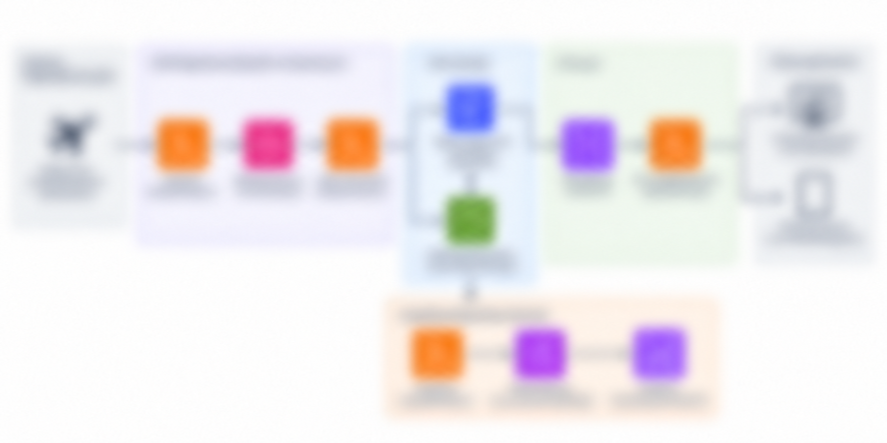

WORK PROJECT / CLOUD & APIS
Third-Party Flight Data API Integration | Cirium
Connecting flight, gate, and status data with airport robotics operations.
Project context
Designed and integrated a third-party flight-data API (Cirium) into a cloud-based airport robotics platform to provide flight and gate information for autonomous fleet operations.
My contributions
- Developed backend services to retrieve, process, and normalize arrival/departure, gate, and flight-status data for use by internal fleet-management applications.
- Integrated flight information with operational logic to identify busy and available airport gates, improving situational awareness for fleet operators and supporting navigation/dispatch decisions.
- Implemented API handling and data-processing logic to translate external aviation data into application-specific models consumable by internal services and web interfaces.
- Evaluated alternative aviation-data providers and API capabilities, including data availability, terminal/gate coverage, update frequency, and operational limitations, to support integration decisions.
- Extended the architecture toward historical flight-data collection and analytics, enabling analysis of terminal activity patterns and supporting future fleet-demand forecasting.
